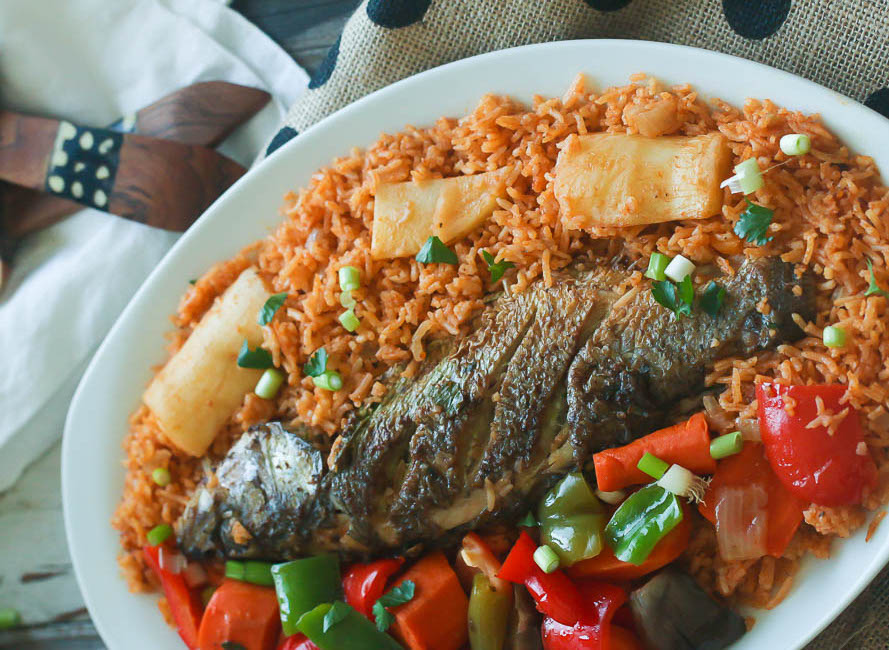

Thiebou Dieune (Senegalese Rice and Fish)

Description
Thiebou Dieune (also spelled Thieboudienne) is a traditional Senegalese dish of richly spiced fish and flavorful rice,
often regarded as the national dish of Senegal.
It combines marinated fish, fresh vegetables, and specially seasoned rice. The dish is typically cooked in one pot,
allowing the flavors to meld together.
Though it takes a bit of patience, the results are hearty, aromatic, and absolutely worth the time.
Ingredients (global)
- Fish: Red snapper or a similar firm white fish is commonly used.
- Vegetables: Carrots, cabbage, eggplant, cassava, and sweet potatoes.
- Tomato base: Tomato paste, crushed tomatoes, or a combination.
- Seasonings and herbs: Onion, garlic, parsley, salt, pepper, and hot peppers (optional, for heat).
- Rice: A long-grain rice that can absorb all the flavors.
- Oil: Typically vegetable or peanut oil to start the sautéing process.
Ingredients (specificity)
- 2 pounds firm white fish (e.g., red snapper), cleaned and cut into steaks
- 2 tablespoons vegetable or peanut oil
- 1 medium onion, chopped
- 2 cloves garlic, minced
- 2 tablespoons tomato paste
- 1 cup crushed tomatoes (optional for extra sauce)
- 4 cups water (or fish stock)
- 2 carrots, peeled and cut into large chunks
- 1/4 head of cabbage, cut into wedges
- 1 small eggplant, sliced into rounds
- 1 sweet potato (or cassava), peeled and cut into chunks
- 1 teaspoon salt (plus more to taste)
- 1/2 teaspoon black pepper
- 1 hot pepper (e.g., Scotch bonnet) for heat (optional)
- 2 cups long-grain rice, rinsed
- Fresh parsley or cilantro for garnish (optional)
Steps
Here's a brief overview of how Thiebou Dieune is typically prepared:
- Sauté the onions and garlic in oil.
- Add the tomato paste, crushed tomatoes, seasonings, and water or stock.
- Simmer the fish and vegetables in the sauce until partially cooked.
- Remove the fish and vegetables, then add rice to the pot to absorb the flavorful liquid.
- Return fish and vegetables to the pot to finish cooking together.
- Allow everything to rest briefly, then serve.
Directions
- Gather all of your ingredients and prepare the fish (clean and cut into steaks).
- Heat oil in a large pot over medium heat. Sauté onions and garlic until translucent.
- Stir in tomato paste and crushed tomatoes (if using). Cook for about 3 to 5 minutes, allowing the flavors to develop.
- Pour in water or fish stock. Season with salt, pepper, and add your hot pepper if desired. Bring to a simmer.
- Add the fish and chopped vegetables to the pot. Simmer until the fish and vegetables are partially cooked (about 10 to 15 minutes), then carefully remove them and set aside.
- Stir in the rice, ensuring it is evenly distributed. Reduce the heat to low, cover, and let the rice absorb the liquid.
- After about 10 minutes, gently place the fish and vegetables on top of the rice. Continue cooking until the rice is tender and the fish is fully cooked (another 10 to 15 minutes).
- Once everything is done, remove from heat. Let the dish rest for a few minutes before fluffing the rice.
- Garnish with fresh parsley or cilantro if desired. Serve hot, sharing both the fish and vegetables on top of the rice.
- Enjoy the hearty, flavorful taste of Senegal's national dish!
Home